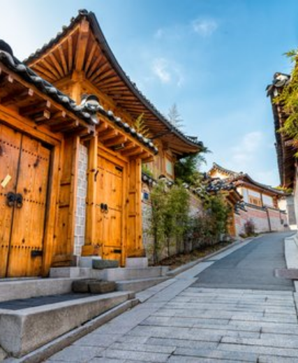
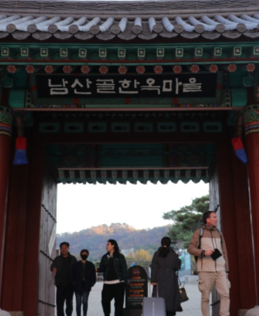
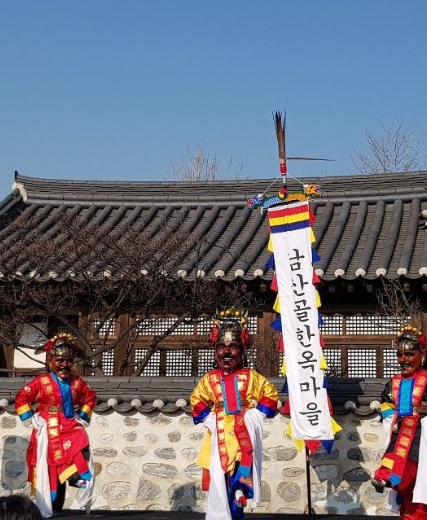
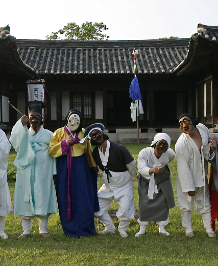
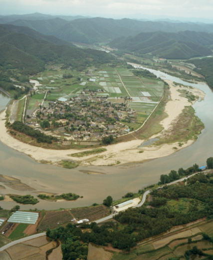

-
조선시대 양반층 주거지 북촌마을
서울 종로의 북쪽마을 도심을 흐르는 청계천과
600년 선조의 숨결이 살아 숨쉬는 곳 입니다. -

' 진화된 구법과 장식화 경향 '
북촌의 한옥은 전통적인 한옥이 갖고 있는
유형적 성격을 잃지 않으며
새로운 도시주택 유형으로 진화했습니다. -
한국 최초의 한옥 대단지
대청에 유리문을 달고, 처마에 잇대어
함석 챙을 달며 새로운 재료를 사용한
북촌의 한옥입니다.
-

도심 한 가운데의 한옥마을
옛 가옥을 복원해 놓은 남산골 한옥마을,
천우각 광장을 지나 돌계단을 오르면
옛 사람들의 생활방식을 볼 수 있게 한
예스러운 공간이 나타납니다. -
' 다섯 채의 한옥 '
삼각동 도편수 이승업 가옥,
삼청동 오위장 김춘영 가옥, 관훈동 민 씨 가옥,
제기동 해풍부원군 윤택영 재실,
옥인동 윤 씨 가옥이 있습니다. -

다양한 체험거리
한복입기, 한지접기, 한글쓰기, 전통예절학교
등이 운영되고 있다. 전통 혼례체험이 실제로
치러지며 제기차기, 윷놀이, 비석치기 같은
민속놀이를 즐길 수 있습니다.
-
유네스코 지정 세계유산
안동 하회마을은 2010년 7월 브라질에서 개최된
제34차 유네스코세계유산위원회 총회에서
'한국의 역사마을'로 세계유산에 등재되었습니다. -

한국의 미와 전통이 살아있는 '하회마을'
조선시대 초기부터 후기에 이르기까지 다양한
양식의 한옥들이 간직한 채 남아있습니다.
서민들의 놀이 하회별신굿탈놀이를 비롯해
전통적인 민속놀이들이 진행되고 있습니다. -

' 하회 '의 유래
낙동강이 오른편 안동시에서 흘러나와
왼 편으로 갑니다. 이 낙동강이 'S'자 모양으로
마을을 감싸 안고 흐르는 데서 유래되었습니다.